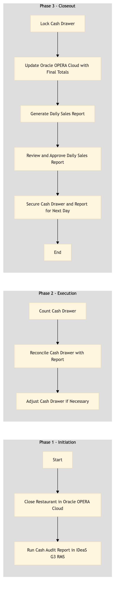

| Role | Steps |
|---|---|
| Food & Beverage Manager | 1.1 2.3 3.1 3.2 3.4 |
| Cashier | 1.2 2.1 2.2 3.3 3.5 |
| Area Manager | 3.4 |
| Step | Name | Role | System | Input | Output | KPI | Dec? | Exc? | Pain Point / Risk |
|---|---|---|---|---|---|---|---|---|---|
| 1.1 | Close Restaurant in Oracle OPERA Cloud | Food & Beverage Manager | Oracle OPERA Cloud | Restaurant operations data | Closed restaurant status in PMS | < 5 min | N | Y | Technical issues with Oracle OPERA Cloud |
| 1.2 | Run Cash Audit Report in IDeaS G3 RMS | Food & Beverage Manager | IDeaS G3 RMS | Cash drawer data | Cash audit report | < 10 min | N | Y | Inaccurate cash counts |
| 2.1 | Count Cash Drawer | Cashier | Oracle OPERA Cloud | Physical cash and coins | Cash count record | < 3 min | N | Y | Handling of large amounts of cash |
| 2.2 | Reconcile Cash Drawer with Report | Cashier | Oracle OPERA Cloud, IDeaS G3 RMS | Cash count record and cash audit report | Reconciliation report | < 5 min | Y | Y | Discrepancies between physical count and reports |
| 2.3 | Adjust Cash Drawer if Necessary | Food & Beverage Manager | Oracle OPERA Cloud, IDeaS G3 RMS | Reconciliation report | Adjusted cash drawer record | < 5 min | N | Y | Handling discrepancies and ensuring compliance |
| 3.1 | Lock Cash Drawer | Cashier | Oracle OPERA Cloud | Adjusted cash drawer record | Locked cash drawer status | < 2 min | N | Y | Physical security of cash |
| 3.2 | Update Oracle OPERA Cloud with Final Totals | Food & Beverage Manager | Oracle OPERA Cloud | Final totals from reconciliation | Updated financial records in PMS | < 5 min | N | Y | Data entry errors |
| 3.3 | Generate Daily Sales Report | Food & Beverage Manager | Oracle OPERA Cloud, IDeaS G3 RMS | Financial records and sales data | Daily sales report | < 10 min | N | Y | Complexity in generating comprehensive reports |
| 3.4 | Review and Approve Daily Sales Report | Area Manager | Oracle OPERA Cloud, IDeaS G3 RMS | Daily sales report | Approved daily sales report | < 10 min | Y | Y | Reviewing large volumes of data |
| 3.5 | Secure Cash Drawer and Report for Next Day | Cashier | Oracle OPERA Cloud, IDeaS G3 RMS | Locked cash drawer and approved report | Secured cash drawer and documented report | < 5 min | N | Y | Ensuring proper documentation and security |
This process outlines the steps for closing a restaurant and reconciling cash at a full-service Marriott hotel using Oracle OPERA Cloud PMS.